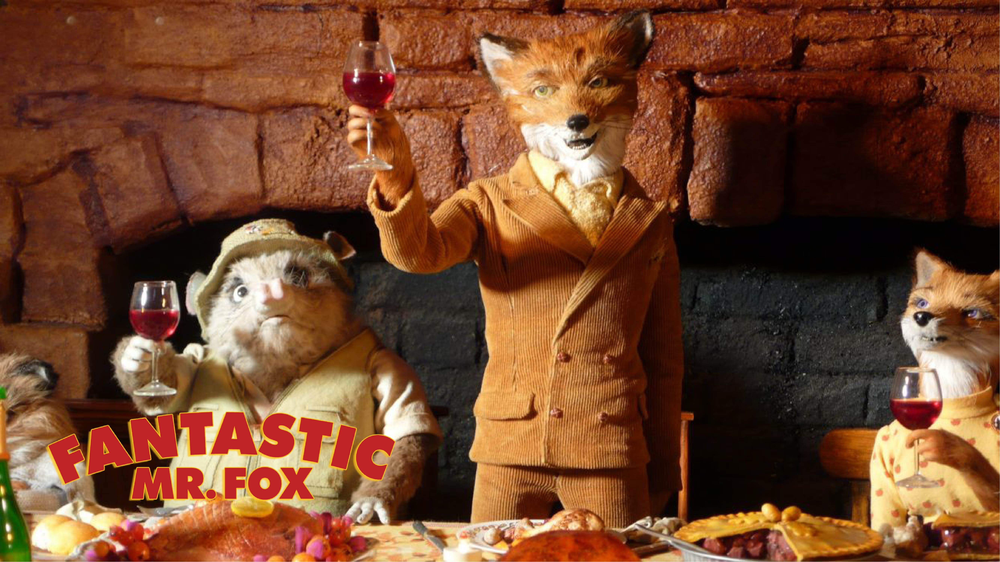

Um filme de Wes Anderson
Inteiramente em stop-motion e brilhantemente dirigido por Wes Anderson — diretor de O Grande Hotel Budapeste (2014)– O Fantástico Sr. Raposo, disponível atualmente nas plataformas Star+ e Apple TV, tem um roteiro de estrutura simples, porém marcante. O longa é inspirado no conto do britânico Roald Dahl — mesmo autor de Charlie e a Fábrica de Chocolate.
Tendo as vozes de grandes nomes do cinema como George Clooney, Meryl Streep e Bill Murray, além de Willem Dafoe, Owen Wilson e Jason Schwartzman, a animação ganha vida. Repleta de cores e detalhes meticulosamente produzidos, cada cena faz com que o telespectador mergulhe na história e tenha uma experiência única sobre a singularidade da vida. Um destes momentos é, por exemplo, o efeito de vento na pelagem dos animais ou a dublagem ter sido feita fora do estúdio para maior imersão e todas as diversas expressões tão bem definidas.
O filme segue a história de ninguém menos que os peculiares Sr. e Sra. Fox. Os dois vivem a vida roubando aves de fazendas, até que a chegada de um filho põe fim às aventuras do casal. Em um salto temporal, a família decide se mudar para uma casa maior que fica localizada em frente às fazendas de três grandes produtores rurais: Boggis, Bunce e Bean. Por instinto próprio do animal que é, o Raposo decide bolar um gran finale e roubar as galinhas, os gansos e as cidras de maçã dos três fazendeiros. Toda a trama da animação se desenrola nos conflitos e nas consequências dos atos do Sr. Raposo.
O longa torna-se ainda mais cativante com a participação dos demais personagens envolvidos na trama. O absurdo de algumas situações geram momentos de quebra de expectativa, que impregnam a narrativa com um humor sagaz, e deixam o telespectador sempre com um sorriso no rosto.
Composto por uma paleta amarela de tons pastéis, muita simetria, cenários cheios de detalhes e uma excelente trilha sonora, Wes Anderson triunfa mais uma vez. A história segue um ritmo frenético, desde as falas rápidas das personagens, até as transições de um cenário para outro. O filme conta ainda com ótimos efeitos visuais que trazem perfeição aos temas da luta contra a própria natureza, a tentação, adrenalina e responsabilidade presentes na vida do Raposo.
Uma das coisas intrigantes no longa é que, ao mesmo tempo que tem um aspecto por vezes infantil e cômico, também apresenta uma marcante mensagem ao expor o quão fundamental é o autoconhecimento em relação à própria natureza de cada um. Por mais que tentem se desapegar da primitividade, os animais, principalmente o Sr. Fox, se veem em dualidade entre sua metade antropomórfica e sua metade animal.
O enredo mostra, durante todo o filme, o medo de amadurecer da raposa, enquanto um ser selvagem e de certa forma “fantástico” — por sua singularidade comportamental — para um ser civilizado dentro dos padrões sociais.
A busca da afirmação de identidade no filme vai além do Raposo somente. Como é o caso do seu filho, Ash, que tem problemas em se relacionar com outros e, principalmente, com o pai. A chegada do primo, Kristofferson, perfeito em tudo que faz, desperta o ciúme e a inveja de Ash, que quer ser o favorito. No entanto, é interessante notar que os personagens acabam percebendo a similaridade entre si e notam que são mais próximos do que eles gostariam de assumir.
Mas, é claro, o Sr. Fox é o mais complexo de todos e a representação de algumas personagens são voltadas inteiramente à compreensão de quem ele é. A personalidade da Sra. Raposo espelha responsabilidade e disciplinariedade, nos moldes do que a sociedade exige. Diferentemente de Kylie, o melhor amigo, que acaba se tornando o “escape” para a natureza selvagem e instiga os velhos hábitos do animal.
Por inúmeras vezes, ao longo do filme, o “fantástico” Sr. Fox se mostrou com fobia de lobos. Porém, ao fim da trama, ele fica frente a frente com a criatura que mais teme. Em vez de fugir, como imaginamos que ele faria, o Raposo para e tenta dialogar com o lobo à distância — em inglês, em francês e até mesmo em latim — mas o animal não o compreende, justamente pela selvageria do seu ser. É em um gesto marcante — o levantar de um punho fechado — onde a relação entre o lobo e a raposa se concretiza.
A cena simples e profundamente simbólica mostra aquilo que o filme inteiro deixa imposto: o reconhecimento de sua porção de liberdade. Em um lado temos o lobo, sem roupas, solto na natureza (representado na tela pela coloração branca ao seu redor, sujeitando-o ao inverno); do outro temos a raposa, trajada, com seu filho, sobrinho e amigo andando em uma lambreta (em um ambiente amarelo quente, como o verão) mostrando a diferença e a impossibilidade de ambas personalidades coexistirem.
Resumindo em uma única palavra, Fantastic Mr. Fox é exatamente o que o nome supõe: fantástico. Um deleite visual, tanto na fotografia quanto na narrativa, que merece ser visto, revisto e aplaudido.